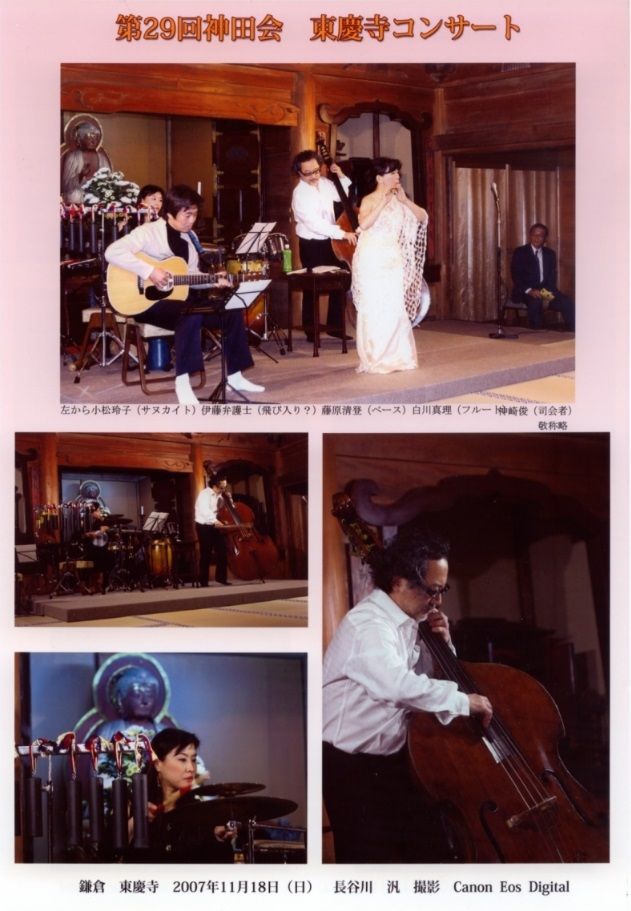
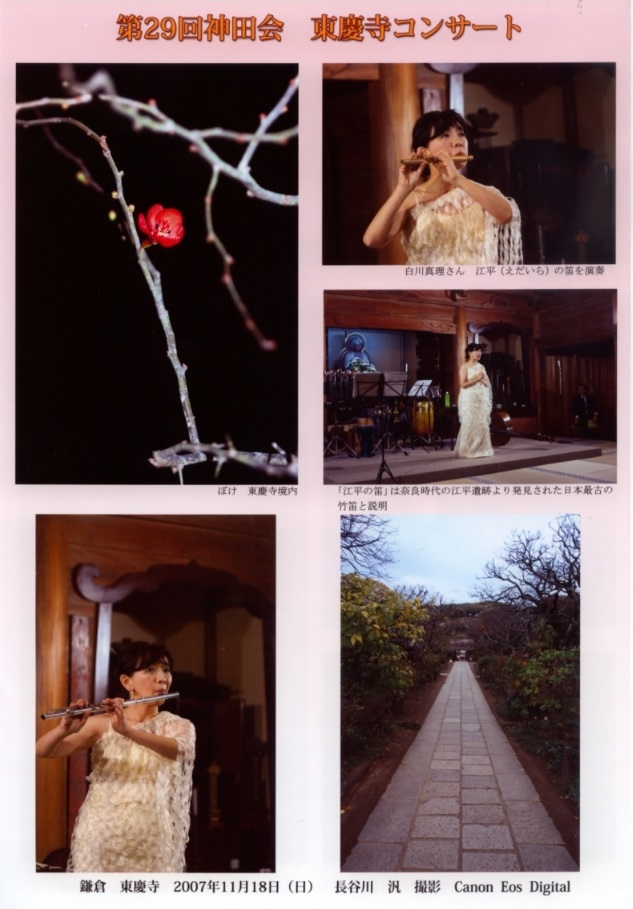
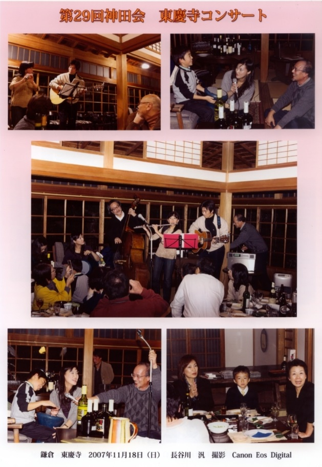
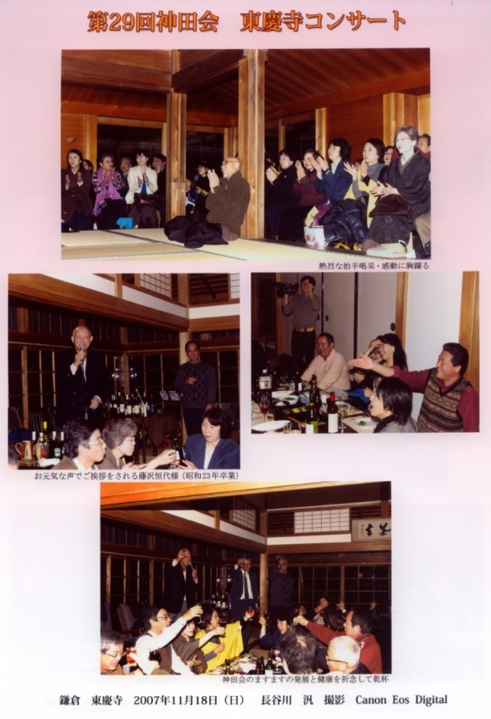

第２９回高高神田会寄合記
～紅葉の古都鎌倉に流れる音を感じる会～
「第６回 紅葉コンサート ｉｎ 東慶寺」
２００７年(H１9)１１月１８日 藤原清登さん（ベース：Ｓ４７年卒）、白川真理さん（フルート：Ｓ５２年卒）、パーカショニスト小松玲子さん(お父さんが高高４０年卒、小松さんは一高卒)に、飛び入りで伊藤尚さん（ギター：Ｓ５２年卒）が参加して、「第６回 紅葉コンサート ｉｎ 東慶寺」が行われました。




写真撮影、編集は長谷川汎さん(29年卒)